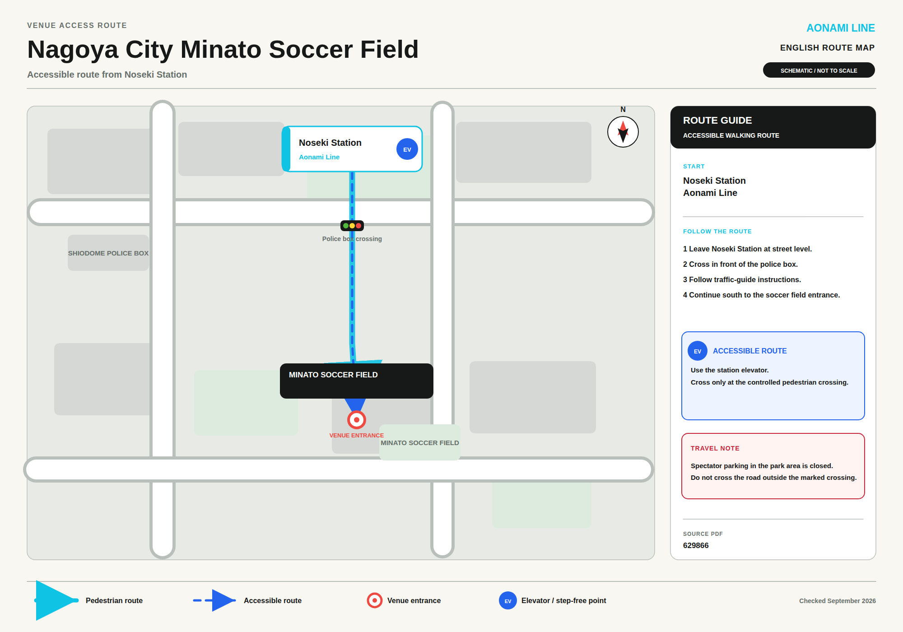

MinatoSoccer Field
Nagoya City Minato Soccer Field, in Minato-ku — the same station area as Inae Sports Center. There is no spectator parking, and nearby lots are reserved for event operations, so this is an Aonami Line-only venue.
Step-free guide
Getting thereNoseki, 8 min walk
There is no spectator parking at the venue — nearby lots are reserved for event operations only. One Aonami Line station serves the field — the same station as Inae Sports Center.
- AAonami Line · Noseki Station
- About 8 min walk. Walking directions (Google Maps)
- Bus
- The Noseki Station bus stop is also about a 7 min walk from the venue, per the official page.
- No parking
- No spectator parking at the venue; nearby lots are reserved for event operations and are not available to spectators. Do not use commercial parking lots or park on residential streets around the venue — the official page asks visitors specifically to avoid this.
Noseki Station map
Station exit to the soccer field, via the police-box crossing · swipe to see all

Schematic, not to scale. Route and station access follow the official spectator-access PDF for this venue. Checked September 2026.
From central Nagoya3 starting points
Live transit directions to Noseki Station from each of the three main hubs. For elevators and step-free routes at that hub station itself, see its own page.
Elevator1, secondary source
A secondary source (Rakuraku Odekake Net) states one elevator is installed at Noseki Station. The operator’s own station page could not be fetched in this research pass (persistent robots.txt error), so treat this as unconfirmed by the primary source until checked directly.
- Noseki Station — the elevator
- One elevator installed, per a secondary source. Verify on the operator’s own page: aonamiline.co.jp/train/an10-noseki.
- System-wide policy
- The Aonami Line’s own accessibility page states an elevator and an accessible toilet are provided at every station on the line.
- Staffing
- This station is normally unstaffed; it is remotely managed by staff based at Kinjō-futō Station. If you need in-person help — a ramp across the platform gap, wayfinding — it may not be available on-site; consider contacting the operator in advance.
Accessible toiletInside the gates
A secondary source places the accessible toilet inside the ticket gates only, with the usual fittings, and confirms the network-wide elevator/toilet policy above.
- Inside the ticket gates
- Wheelchair-accessible toilet, general toilet, ostomate fixture and baby bed all provided inside the gates; none outside the gates, per a secondary source (Rakuraku Odekake Net).
- Step-free routes
- Ground-to-gate, gate-to-platform, and between-platforms are all confirmed step-free.
- Platform
- Movable platform-edge barriers on both platforms (a single island platform, Platforms 1 and 2).
Entrances & exitsNot confirmed
No source in this research pass gave exit numbering for this station.
- Exit numbering
- Not confirmed from any source — the operator’s own station page could not be fetched (robots.txt error). Check directly at aonamiline.co.jp/train/an10-noseki or on site.
- Wheelchairs
- Handle-type and powered wheelchairs are permitted; no advance notice required. A welfare transport service is not available at this station.
Source · Aichi Prefecture, official Asian Games venue-access page (pref.aichi.jp/soshiki/unei-shien/12-ag-minato.html) and venue-access map (PDF); Cocospo national facility directory, for address (cocospo.go.jp/facility/30867); Aonami Line official station page, aonamiline.co.jp/train/an10-noseki (cited as the primary source; not fetchable by automated tools in this research pass); Aonami Line accessibility overview, aonamiline.co.jp/guidance/accessibility; Rakuraku Odekake Net, secondary source (ecomo-rakuraku.jp/ja/station/野跡/). Checked September 2026.